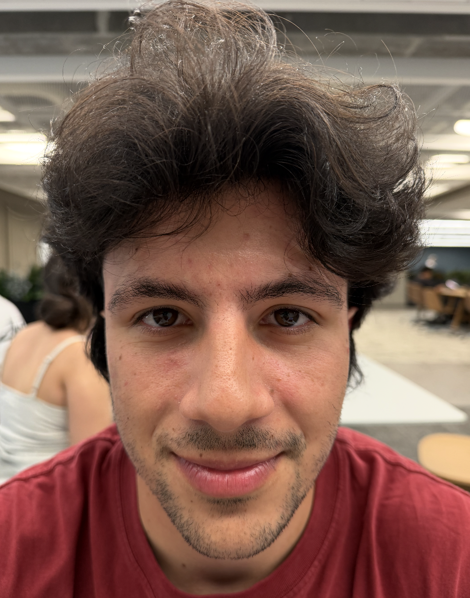
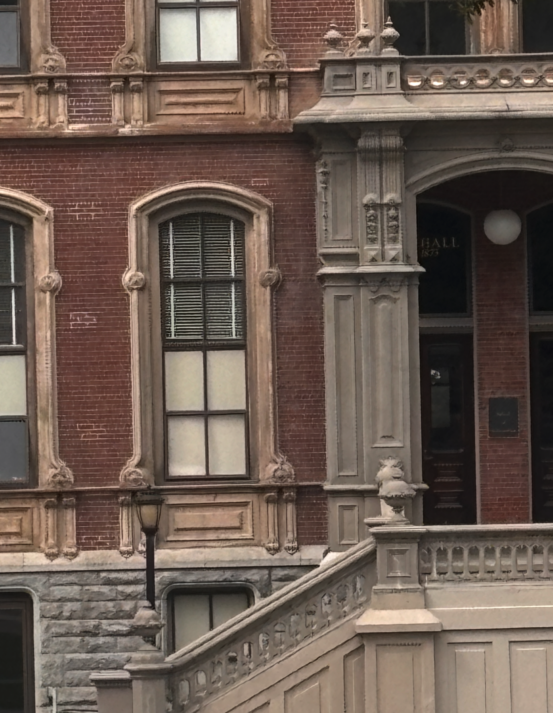
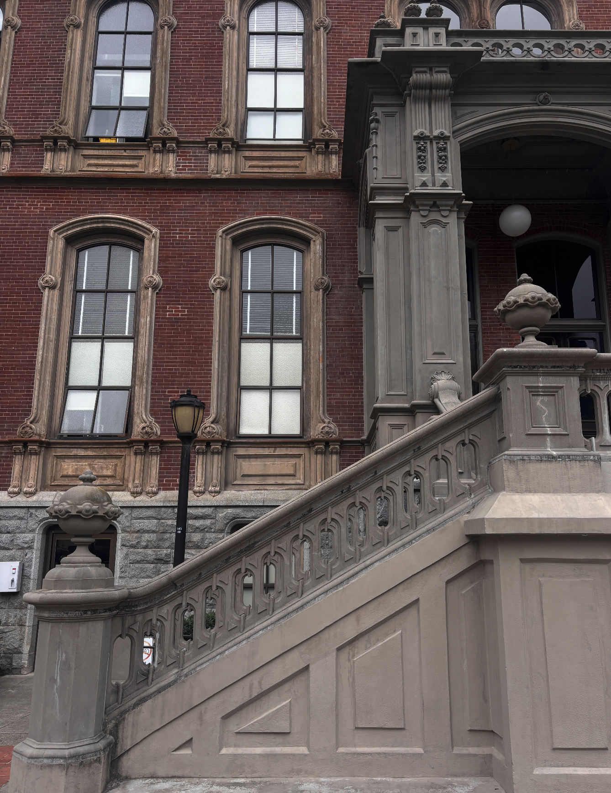
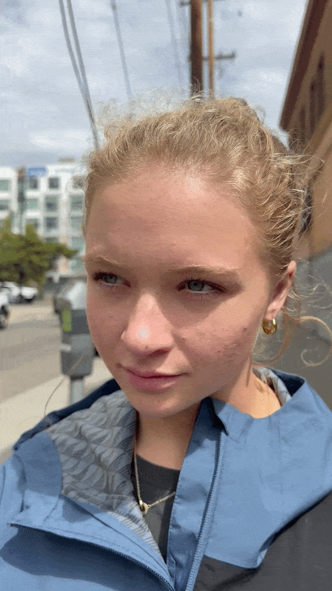

1
The right way to take a selfie
Same face, same framing, two distances. Up close the nose and forehead sit much nearer the lens than the ears, so they stretch; backing up and zooming in flattens the whole face toward a single depth.


2
Architectural compression
2 photos of South Hall, shot from 2 distances. The same effect as the selfie, however the depth provided by the closer shot reveals a much more beautiful image.


3
Dolly zoom
The famous Dolly Effect. Captured by walking backward while simultaneously zooming in. It keeps the subject in frame, as the background blows up around her.
